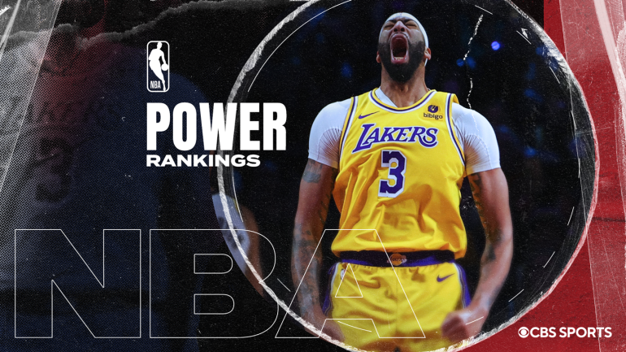
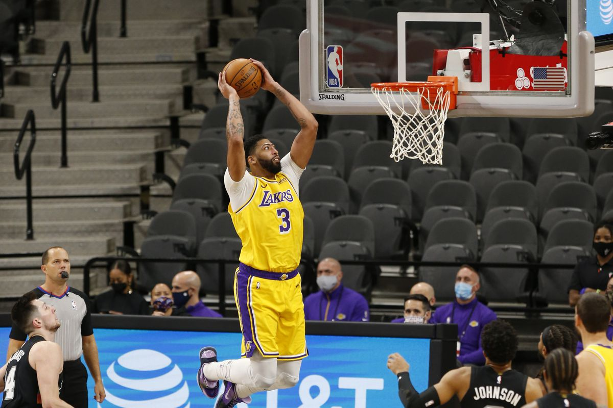

>> NBA Power Rankings

- An unprecedented event requires and unprecedented set of NBA Power Rankings, so it's time to throw one more accolade on
the Los Angeles Lakers, who took home the first-ever In-Season Tournament championship on Saturday. The title win over
the Indiana Pacers technically doesn't count toward the standings, but it certainly made an impact on this week's
rankings.
- The Lakers jump all the way to the No. 1 spot this week thanks to three impressive wins that resulted in the team
hoisting a trophy and, eventually, raising a banner. They may not be the best team in the league, but nobody had a
better week than Tournament MVP LeBron James and the Lakers, and that's what the Power Rankings are all about.
- The Philadelphia 76ers also had a strong week, going undefeated to move up nine spots into the top three. Further down,
the Houston Rockets vaulted into the top 10 after finally winning a road game during an impressive stretch behind an
utterly stingy defense.
- On the other side, we have the Knicks, who fell 10 spots by going 1-2, during which they gave up an obscene 136.3 points
per 100 possessions. If you're not too familiar with analytics, the worst team in the league this season is allowing
just over 121. So, yeah, that's real bad.
- With the In-Season Tournament in the rearview mirror and the Christmas Day showcase rapidly approaching, here are this
week's NBA Power Rankings.

Source : Click here